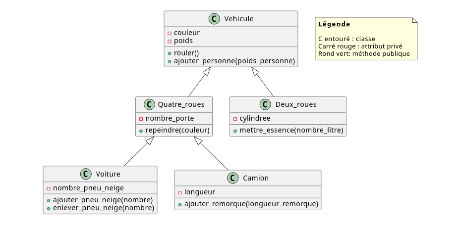
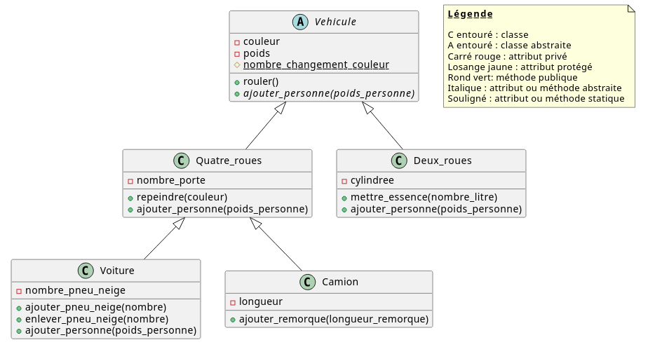
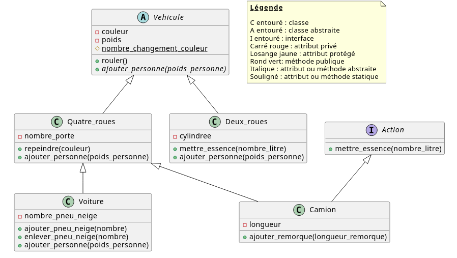

Auteur : GF
Créer les cinq classes du schéma suivant en tenant compte de leur héritage. Toutes les méthodes sont publiques et les attributs privés.

Créer les accesseurs de tous les attributs. Créer un constructeur dans la classe Vehicule prenant en paramètres la couleur et le poids. Modifier la méthode rouler() pour qu’elle affiche "Le véhicule roule". Modifier la méthode ajouter_personne(poids_personne) pour qu’elle change le poids du véhicule en fonction du poids de la personne passé en paramètre.
Créer une page affichage.php créant un véhicule noir de 1500 kg. Le faire rouler.
Ajouter une personne de 70 kg et afficher le nouveau poids du véhicule.
Implémenter la méthode repeindre(couleur) pour changer la couleur définie dans la classe Vehicule. Implémenter la méthode mettre_essence(nombre_litre) pour changer le poids défini dans la classe Vehicule. Pour cet exercice, un litre correspond à un kilogramme.
Implémenter les méthodes ajouter_pneu_neige(nombre) et nlever_pneu_neige(nombre) modifiant l’attribut nombre_pneu_neige.
Implémenter la méthode ajouter_remorque(longueur_remorque) modifiant l’attribut longueur.
Dans la page affichage.php, créer une voiture verte de 1400 kg. Ajouter deux personnes de 65 kg chacune. Afficher sa couleur et son nouveau poids.
Repeindre la voiture en rouge et ajouter deux pneus neige.
Afficher sa couleur et son nombre de pneus neige.
Créer un objet Deux_roues noir de 120 kg. Ajouter une personne de 80 kg. Mettre 20 litres d’essence.
Afficher la couleur et le poids du deux-roues.
Créer un camion bleu de 10000 kg d’une longueur de 10 mètres avec 2 portes. Lui ajouter une remorque de 5 mètres et une personne de 80 kg.
Afficher sa couleur, son poids, sa longueur et son nombre de portes.
Rendre la classe Vehicule et sa méthode ajouter_personne(poids_personne) abstraites.
Définir la méthode ajouter_personne(poids_personne) dans la classe Deux_roues pour que cette méthode ajoute le poids de la personne plus 2 kg correspondant au casque du deux-roues.
Définir la méthode ajouter_personne(poids_personne) dans la classe Quatre_roues pour effectuer la même chose que ce qu’elle faisait dans la classe Vehicule.
Créer une méthode publique statique dans la classe Vehicule s’appelant afficher_attribut().
Cette méthode prend un objet en paramètre et affiche la valeur de tous ses attributs (s’ils existent), c’est-à-dire la couleur, le poids, le nombre de portes, la cylindrée, la longueur et le nombre de pneus neige.
Dans la page affichage.php créer un deux-roues rouge de 150 kg.
Ajouter une personne de 70 kg et afficher son poids total.
Changer la couleur du deux-roues en vert. Lui affecter une cylindrée de 1000.
Afficher toutes les valeurs des attributs du deux-roues à l’aide de la méthode afficher_attribut().
Créer un camion blanc de 6000 kg.
Lui ajouter une personne de 84 kg. Le repeindre en bleu. Lui affecter 2 portes.
Afficher toutes les valeurs des attributs du camion à l’aide la méthode afficher_attribut().
Ajouter un constructeur dans la classe Quatre_roues prenant en paramètres la couleur, le poids et le nombre de portes.
Substituer la méthode publique ajouter_personne(poids_personne) dans la classe Voiture. Cette méthode exécute la méthode ajouter_personne(poids_personne) de la classe Quatre_roues et affiche "Attention, veuillez mettre 4 pneus neige." si le poids total du véhicule est supérieur ou égal à 1500 kg et s’il y a 2 pneus neige ou moins.
Ajouter une constante SAUT_DE_LIGNE = "<br>" dans la classe Vehicule et modifier la méthode afficher_attribut($objet) pour remplacer les <br>.
Ajouter un attribut protégé statique dans cette classe s’appelant nombre_changement_couleur et l’initialiser à 0. Cet attribut représente le nombre de fois que la couleur va changer quel que soit l’objet dont vous changez la couleur. Ce changement de couleur s’effectue dans la méthode setCouleur().
Changer l’accesseur setPoids() de la classe Vehicule pour que le poids total de la voiture fasse au maximum 2100 kg.
Dans la page affichage.php créer une voiture verte, 2100 kg avec 4 portes.
Ajouter 2 pneus neige puis ajouter une personne de 80 kg.
Changer la couleur de la voiture en bleu.
Enlever 4 pneus neige.
Repeindre la voiture en noir.
Afficher tous les attributs de la voiture et le nombre de fois où la couleur a été changée avec la méthode afficher_attribut($objet).
Le nouveau modèle est :

Les accesseurs ne sont pas représentés.
Créer une interface Action contenant la signature de méthode mettre_essence(int $nombre_litre) :void
Modifier la classe Camion pour qu’elle implémente l’interface Action et donc redéfinisse la méhode mettre_essence(int $nombre_litre) :void comme dans la classe Deux_roues.
Dans la page affichage.php créer un camion bleu, 10000 kg avec 2 portes.
Fixer la longueur à 10 m.
Mettre 100 litres d’essence.
Repeindre le camion en vert.
Afficher tous les attributs de la voiture et le nombre de fois où la couleur a été changée avec la méthode afficher_attribut($objet).
Le nouveau modèle est :
